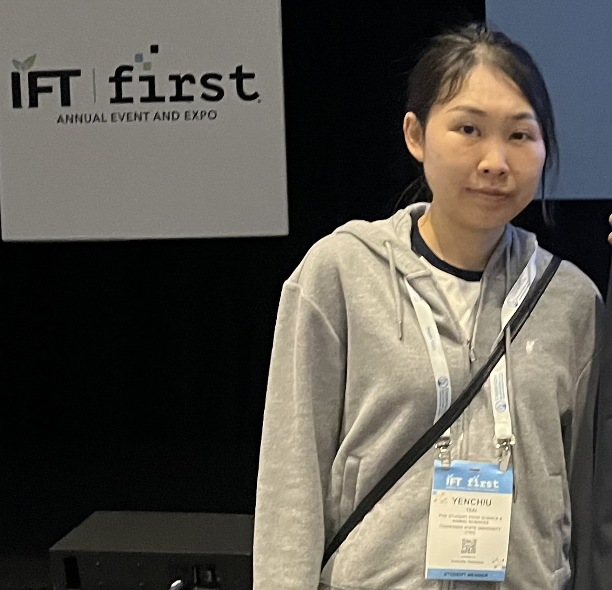
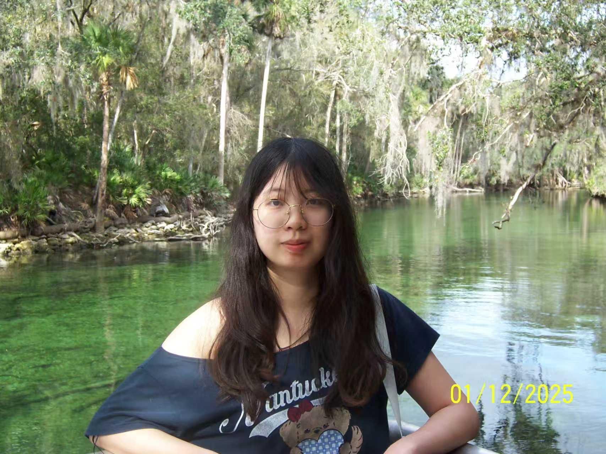
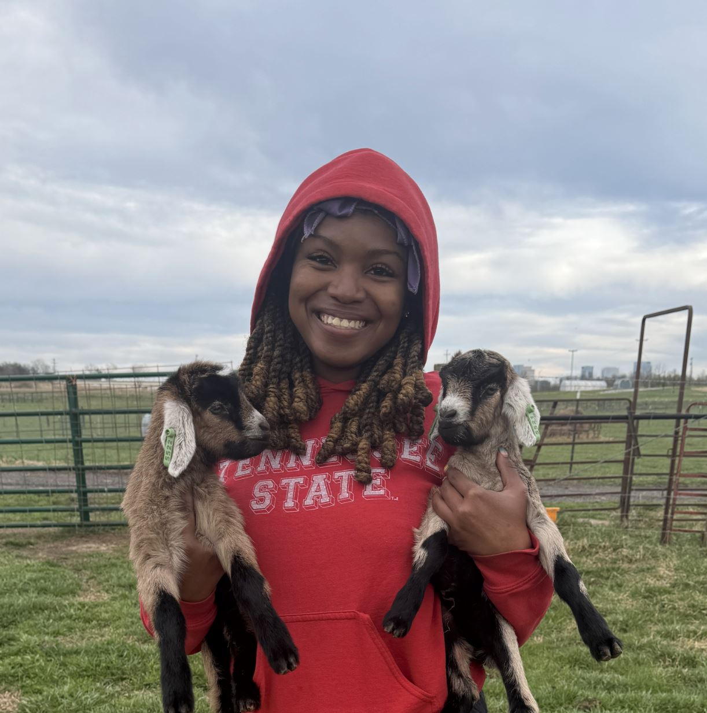

Principal Investigator
Dr. Steven Sheng
Principal Investigator and Program Leader in Meat Science at Tennessee State University. Dr. Sheng leads research in spatial nutrition analysis, MALDI imaging, consumer sensory innovation, and interdisciplinary collaboration across TSU, Vanderbilt, and UW–Madison.
Contact Information
Email: ssheng@tnstate.edu
Office: TSU Meat Science Laboratory, College of Agriculture
Address: 3500 John A. Merritt Blvd, Nashville, TN 37209
Phone: (615) 963‑1472


Graduate Students

Yenchiu Tsai — Ph.D. Candidate specializing in MALDI–MSI and spatial chemistry.

Guangyi Shen — Ph.D. Candidate in meat quality and metabolomics.

TaSani Johnson — M.S. Candidate focusing on consumer sensory science and product innovation.
Undergraduate Students
Zihan Sun — Undergraduate researcher assisting with spatial nutrition analysis and laboratory operations.